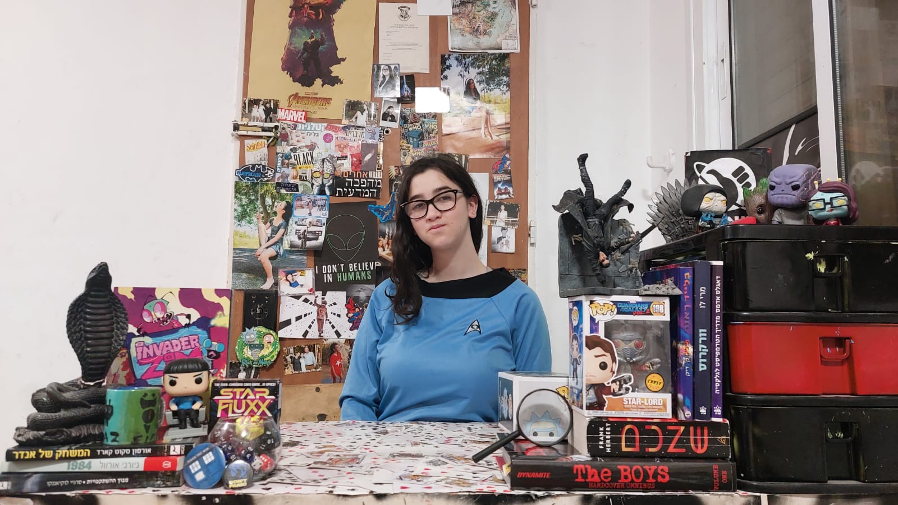

The woman behind the text
About Me
My name is Ella Galya Avrutis and I am a 16 year old.
I'm a massive nerd and an equally big geek, so it's not that surprising that I'm huge cinephile and pretty good amateur programmer. In fact, programming and film making is what I intend to do with my life.
Reliability
I have written here quite a few facts about science fiction and also things that are less easy to determine as absolutes such as which books and authors are influential, which books, films and series are a must see, etc. Why should you believe my word and trust my opinion?
As I wrote, I'm a film buff and I've seen and read almost all the works I mentioned and about 99% of the works I expanded on. I've probably seen and read (especially in science fiction) more than most average adults. Because of my interest in the subject, I also read quite a few articles and studies and did several works on the subject. For example, right now (January 2023) I'm writing an argumentative text on the subject of robots taking over. In addition to my opinion, I cross-checked with several sources on the Internet (the most reliable place in the world) and all to provide the best answer to complicated questions such as what is science fiction? Or what is the first science fiction novel? And I really hope you enjoyed and learned from reading.
Me & Sci Fi: The Beginning
You can say that I got into it from a young age, Star Wars is what got me excited about cinema in the first place. But science fiction as a genre? It's more complicated. I read Asimov here and Adams there, I saw Doctor Who on Sunday and Star Trek on Thursday and I plowed through films. At some point the token fell and I realized that I had already seen a lot of what are considered classics and my thoughts deal with these ideas non-stop anyway. I really realized how much science fiction fascinates me and represents me as a human being and as the eager and obsessive person that I decided to delve even deeper into the field.
I recommend that you first understand what interests you about science fiction or what you like in general. Light comedy? Futurama or the hitchhiker's guide. Action-packed epic journeys? Star Wars or Dune. Would you rather do something? There are also plenty of video and board games.
Me & Sci Fi
So why do I love science fiction so much to the level where I read and see so much?
It's hard for me to put my finger on it but since I found my way to this wonderful genre I felt that if I were a genre it would probably be science fiction.
Science fiction provides fantasy worlds and complex stories but where fantasy is the impossible, science fiction is the impossible made possible. These spectacular worlds are not so far from our reality and seem like more than any other genre, science fiction really makes you think. Good sci-fi stories manage to create a perfect balance between a fictional story that sweeps you away and a statement or question about today's world. It's hard for me to explain, but even when it's science fiction in its most fictional and exaggerated form, ideas of robots, parallel universes and space travel sound much cooler to me than dragons, ghosts and fairies (and be sure I've saw and read my fair sure of fantasy and horror, You are reading the words of the D&D player...).
These are a few of my favorite things...
Of course I didn't have the space to mention and say all the works I like. So here's a shoutout to some of the books, films and series that I didn't praise enough but I really like. I won't be able to write everything here either, but at least part of it. Also, works that I really like but have said enough about like: 'Black Mirror', '1984' or '2001 A Space Odyssey' will not appear.
Books
A Fire Upon Deep - This crazy epic story is not for beginners but dam is good
Fahrenheit 451 and Slaughterhouse Five - seriously, one level below 1984 and if you didn't understand that's a huge huge compliment.
The Hitchhiker's Guide to the Galaxy and Ender's Game have nothing in common. In fact, they show how diverse sci-fi can be and both are responsible for about 40-60% of why I'm in love with the genre
Legend and 'מבוך ההשתקפויות' - How come I'm the only one who knows these books? The first could easily be the new face of young adult literature and the second hasn't even been translated into English! They didn't do anything new but they are good.
H. G. Wells and Isaac Asimov are a pair of geniuses. The end.
And because I have to say it at least one more time: nineteen eighty-four (now click on the picture on the right to check how many books from the required books you have read)
Films
Pual- a sci-fi comedy about sci-fi fans for sci-fi fans
District 9 and The Stepford Wives - I couldn't give more examples of excellent social criticism...
Paprika, Moon and Predestination - they may be relatively unknown but they are going to blow your mind!
And these are just the ones that pope into my haed first and I feel I didn't mention at all. Each of the films I said (maybe except for two that I don't understand why people like) is two hours (roughly) that you won't regret wasting. (Click on the image on the right to see how many of the must-see science fiction films you've seen!)
Tv series
Doctor Who, Star Trek and Stargate - science fiction classics that influenced me and my love of the genre deeply and if you haven't heard of them, what are you doing here?
Zim Invader and Red Dwarf- I love those series so much and sometimes it seems like I'm the only one and it's a shame because those two are one of there kind
Inside Job, Severance and The Boys: Diabolical - look out for them they are about to become a hit. (Never mind, Netflix canceled Inside Job because they have no brains, watch it anyway, it's not an imitation of Rick and Morty (another excellent series))
The Prisoner, Life on Mars, BLACK MIRORR and Love, Death & Robots- I just love science fiction and this is why
Here I expanded a little more even though there are more films that I like than series, but when it comes to my favorites there is more variety in styles in the series (Click on the image on the right for the full list)